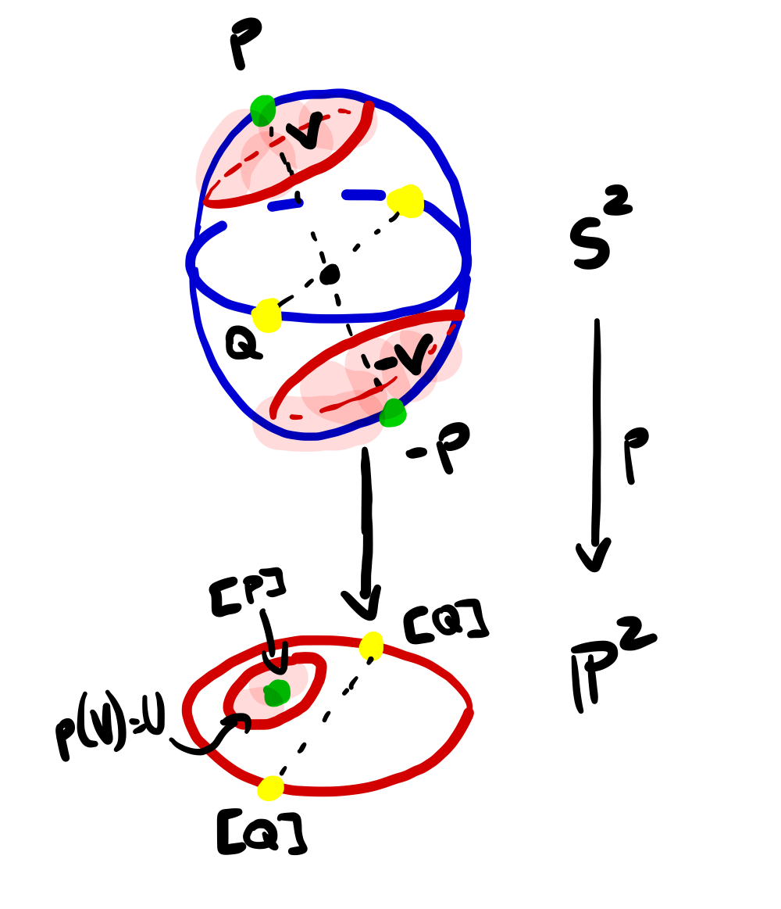
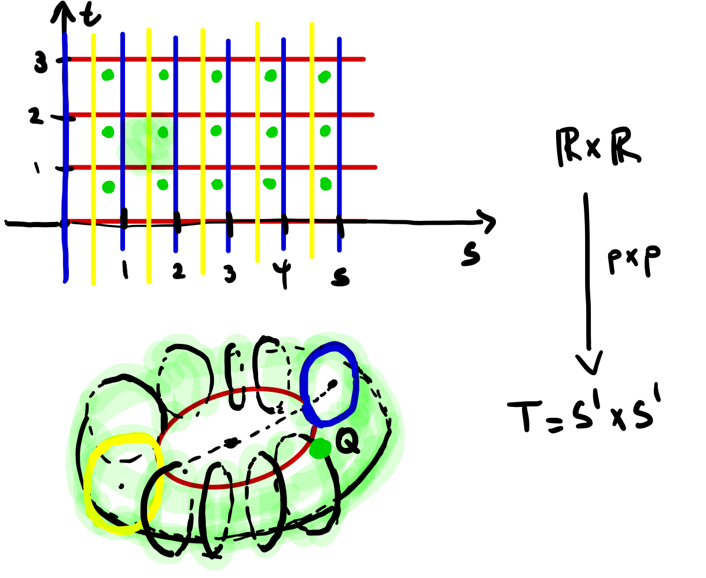

Let \(p\colon E\rightarrow B\) be a surjective continuous map. A set \(U\subseteq B\) is evenly covered by \(p\) if \(p^{-1}(U)\) can be written as a disjoint union of open sets \(p^{-1}(U)=\bigcup_{\alpha\in I} V_{\alpha}\text{.}\) The collection \(\{V_{\alpha}\}_{\alpha\in I}\) and \(p\vert_{V_\alpha}\colon V_\alpha\rightarrow p^{-1}(U)\) is a homeomorphism for all \(\alpha\in I\text{.}\)
The collection \(\{V_{\alpha}\}_{\alpha\in I}\) is called a partition of \(p^{-1}(U)\) into slices.
If every \(b\in B\) has an open neighborhood \(U\) that is evenly covered by \(p\text{,}\) then \(p\) is called a covering map and \(E\) is called a covering space of \(B\text{.}\)
Example1.3.2.Trivial covering.
Let \(X, Y\) be topological spaces, and suppose \(X\) is discrete. The projection
\begin{align*}
\pi_Y\colon X\times Y \amp \rightarrow Y\\
(x,y) \amp\mapsto y
\end{align*}
is a covering map. We call this a trivial covering of \(Y\text{.}\)
Since \(X\) is discrete, \(\{x\}\) is open for any \(x\in X\text{.}\) Given any open \(U\subseteq Y\text{,}\) the preimage \(\pi_Y^{-1}(U)\) is the disjoint union of the open sets \(V_x=\{x\}\times U\text{,}\) each of which is homeomorphic to \(U\) by the map \(V_x\rightarrow U\) sending \((x,y)\) to \(y\text{.}\) Thus all open sets of \(Y\) are evenly covered by \(\pi_Y\text{.}\)
This is called a trivial covering because the space \(X\times Y\) is homeomorphic to a a disjoint union of copies of \(\{x\}\times Y\) Alternatively, since \(X\) is discrete, the map
For all \(b\in B\text{,}\) the preimage \(p^{-1}(\{b\})\) is a discrete subspace of \(E\text{.}\)
For all \(e\in E\) there exists an open set \(U\) containing \(e\) such that \(p\vert_U\colon U\rightarrow E\) is a homeomorphism: i.e., \(p\) is a local homeomorphism.
\(p\) is an open map.
\(p\) is a quotient map.
If \(E\) is connected and \(\abs{p^{-1}(\{b_0\})}=k\) for some \(b_0\in B\) and \(k\in \Z_+\text{,}\) then \(\abs{p^{-1}(\{b\})}=k\) for all \(b\in B\text{.}\) We call \(p\) a \(k\)-fold covering in this case.
The proofs of these statements are left as exercises.
Example1.3.5.\(n\)-fold covering of \(S^1\).
The map \(p\colon S^1\rightarrow S^1\) sending a point \(Q=(\cos 2\pi s, \sin 2\pi s)\) to \(p(Q)=(\cos 2\pi ns, \sin 2\pi ns)\) is an \(n\)-fold cover of \(S^1\text{.}\)
Recall that \(\mathbb{P}^2\) is the quotient space obtained by identifying elements of \(\R^3-\{(0,0,0)\}\) that are scalar multiples of one another. We showed in a homeowork that \(\mathbb{P}^2\) is homeomorphic to the quotient of \(S^2\) obtained by identifying antipodal points. The corresponding quotient map \(p\colon S^2\rightarrow \mathbb{P}^2\) is a covering map.
For a point \(P\in S^2\text{,}\) let \(-P\) be its antipode: using the vector space structure of \(\R^3\text{,}\) if \(P=(x,y,z)\text{,}\) then \(-P=(-1)(x,y,z)=(-x,-y,-z)\text{.}\) It is easy to see that the map \(P\mapsto -P\) defines a homeomorphism on \(S^2\text{.}\)
First we show that \(p\) is an open map. Let \(U\subseteq S^2\) be open. Since \(p\) is a quotient map, the set \(p(U)\) is open if and only if its preimage \(p^{-1}(p(U))\) is open. Since \(p(P)=p(Q)\) if and only if \(P=\pm Q\text{,}\) we see that \(p^{-1}(p(U))=U\cup -U\text{,}\) where \(-U=\{-P\colon P\in U\}\text{.}\) Since the antipodal map \(P\mapsto -P\) is a homeomorphism, and since \(U\) is open, \(-U\) is open. It follows that \(p^{-1}(p(U))=U\cup -U\) is open. We conclude that \(p(U)\) is open.
We now show that \(p\) is a double covering of \(\mathbb{P}^2\text{.}\) Given any \([P]\in \mathbb{P}^2=S^2/\sim\text{,}\) let \(V=B_{1/2}(P)\cap S^2\text{,}\) and let \(U=p(V)\text{.}\) By the argument above, we have \(p^{-1}(U)=p^{-1}(p(V))=V\cup -V\text{,}\) where \(V\) and \(-V\) are both open sets. Furthermore, since \(\operatorname{diam} V\leq 1\text{,}\) we have \(V\cap -V=\emptyset\text{.}\) Finally, since \(p\) is an open map, and since \(p\vert_{\pm V}\) is a bijection onto \(U\) (since \(V\cap -V=\emptyset\)) we conclude that \(p\vert_{\pm V}\) is a homeomorphism onto \(U\text{.}\) This proves \(p\) is a covering map. Since \(p^{-1}(\{[P]\})=\{P, -P\}\) for all \([P]\in \mathbb{P}^2\text{,}\) we see that \(p\) is a double covering.

Figure1.3.7.A double cover of \(\mathbb{P}^2\)
Example1.3.8.Not all quotient maps are covering maps.
The map \(p\colon I\rightarrow S^1 \text{,}\) defined as \(p(s)=(\cos 2\pi s, \sin 2\pi s)\) is not a covering.
Example1.3.9.Local homeomorphism not sufficient.
The map \(p\colon \R_+\rightarrow S^1\) defined as \(p(s)=(\cos 2\pi s, \sin 2\pi s)\) satisfies (1)-(4) of Theorem 1.3.4, but is not a covering map.
Since \(p\) is just the restriction of the covering map from Example 1.3.3 to the open set \(\R_+\text{,}\) we easily see that it satisfies (1)-(4). However, there is no open neighborhood of \((1,0)\) that is evenly covered by \(p\text{.}\) Indeed, assume by contradiction that \(U\) was such an open neighborhood. Shrinking if necessary, we can assume that \(U=\{(\cos 2\pi s, \sin 2\pi s)\colon s\in (-\epsilon, \epsilon)\}\text{,}\) where \(\epsilon < 1/2\text{.}\) But then among the slices in the preimage of \(U\) we would have the set \([0,\epsilon)\text{,}\) and \(p\vert_{[0,\epsilon)}\) is not a homeomorphism onto \(U\text{.}\)
Theorem1.3.10.Covering map constructions.
If \(p\colon E\rightarrow B\) and \(p'\colon E'\rightarrow B'\) are covering maps, then the map \(p\times p'\colon E\times E'\rightarrow B\times B'\) defined as \(p\times p'(e,e')=(p(e), p'(e'))\) is a covering map.
If \(p\colon E\colon \rightarrow B \) is a covering map and \(B_0\subseteq B\) is a subpace, then \(p\vert_{p^{-1}(B_0)}\colon p^{-1}(B_0)\rightarrow B_0\) is a covering map.
If \(p\colon E\rightarrow B\) is a covering map and \(\phi\colon E'\rightarrow E\) and \(\psi\colon B\rightarrow B'\) are homeomorphisms, then \(p\circ \phi\) and \(\psi\circ \phi\) are covering maps.
We prove (1). It is clear that the map \(p\times p'\) is continuous and surjective. Given \((b,b')\in B\times B'\text{,}\) let \(U, U'\) be open neighborhoods of \(b\) and \(b'\text{,}\) respectively, that are evenly covered by \(p\) and \(p'\text{,}\) respectively. Let \(p^{-1}(U)=\bigcup_{\alpha\in I}V_\alpha\) and \((p')^{-1}(U')=\bigcup_{\beta\in J}V'_{\beta}\) be the corresponding partitions of their respective preimages into slices. We have
It is easy to see that this is a disjoint union of open sets, and that \(p\times p'\vert_{V_\alpha\times V'_{\beta}}\) is a homeomorphism onto \(U\times U'\) for all \((\alpha, \beta)\in I\times J\text{.}\) Thus every element of \(B\times B'\) has an open neighborhood that is evenly covered by \(p\times p'\text{.}\)
Example1.3.11.Covering of torus.
Let \(p\colon \R\rightarrow S^1\) be the usual covering of the circle. The map \(p\times p\colon \R\times\R\rightarrow S_1\times S_1\cong T\) is a covering of the torus.

Figure1.3.12.A covering of the torus
Example1.3.13.Covering of figure eight.
The figure eight is the subpsace of \(Y\subseteq T=S^1\times S^1\) defined as \(Y=S^1\times \{(1,0)\}\bigcup \{(1,0)\}\times S_1\text{,}\) and let \(X=\R\times \Z\cup \Z\times \R\text{,}\) the preimage of \(Y\) under the covering map \(p\times p\) from Example 1.3.11. By Theorem 1.3.10, \(p\times p\vert_X\colon X\rightarrow Y\) is a covering map.